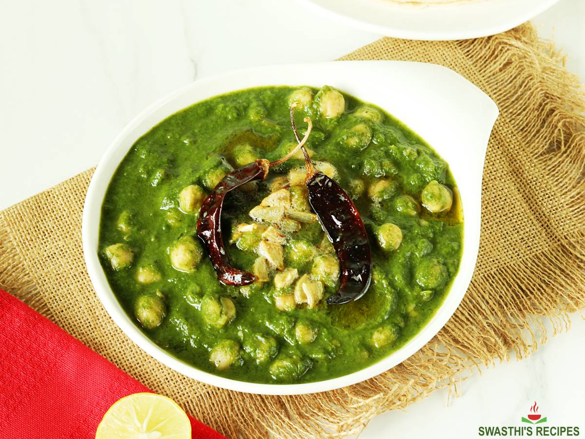

chana palak

Description
This is a rich and delicious Indian chickpea curry. Similar to the ubiquitous chana masala, chana palak instead uses
spiced curried spinach to create a vibrant, deep sauce that warms and nourishes. If the recipe seems daunting, don't worry!
It's deceptively simple, and most steps can be done ahead of time. Enjoy it with rice, fresh naan, paratha, or roti.
*While you can use frozen spinach and canned chickpeas in a pinch, for the best results use fresh ingredients (it's worth it!).
*Tempering the dish with ghee at the end of cooking takes the dish to the next level, but is not necessary.
This recipe was adapted from Swasthi's Recipes.
Ingredients
- 1 cup dried chickpeas, or 3 cups cooked/canned
- 4 to 5 cups fresh spinach
- 1/4 cup cilantro leaves and tender stems
- 2 1/2 tablespoons oil, divided
- 2 teaspoons salt, divided
- 1 cup onions, finely chopped
- 1 1/2 teaspoon ginger, finely chopped
- 2 cloves garlic, minced
- 1 to 2 green chilis, slit (adjust to taste)
- 1 tablespoon fenugreek leaves (kasuri methi)
- 1 cup tomatoes, finely chopped
- 1 teaspoon garam masala
- 1 1/2 cups water (more if needed)
To temper (optional)
- 1 tablespoon ghee
- 2 dried red chilis
- 2 garlic cloves, chopped
- pinch of asafoetida (hing)
Steps
Prepare the chana (skip if using cooked/canned chickpeas)
- Rinse and soak 1 cup of chickpeas for at least 8 hours. Drain the water and rinse the chana well.
-
- Cooking in the pressure cooker: Add 2 cups of water to the chickpeas and cook in the pressure cooker according to your machine's instructions.
The cooked chickpeas should be tender and soft, but not mushy. Let the pressure release naturally.
- Cooking on the stovetop: Add the chickpeas to a pot and cover with several inches of water. Bring to a boil,
reduce the heat, and simmer for 1 1/2 - 2 hours until tender.
Prepare the palak
- Add 1 1/2 tablespoon of oil in a deep pan or saucepan on high heat. Reduce the heat to medium and add ginger, garlic,
and green chilis. Saute for 30-60 seconds. Reduce the amount of green chili if you don't want a spicier dish.
- Add onions and 1 teaspoon of salt, and saute until golden and fully cooked.
- Stir in the spinach and cook for 2 to 3 minutes, just until wilted. Transfer to a plate and cool completely.
- Transfer the cooled ingredients to a blender, and add the coriander leaves. Blend to a smooth paste.
Make the chana palak
- Heat the remaining tablespoon of oil in the same pan. Add the fenugreek leaves and saute for 1-2 minutes. Add tomatoes
and the remaining teaspoon of salt. Saute until soft and mushy.
- Add the garam masala, cooked chana, and 1 1/2 cups liquid (the chana cooking water and extra water if needed).
- Cover and simmer the chana for 5 minutes.
- Reduce the heat, and add the palak paste to the pan. Stir until fully mixed and cook for 1-2 minutes until the
chana palak begins to bubble.
- Taste and add more salt and garam masala if needed. Turn off the heat and transfer the chana palak to a serving bowl.
Tempering (optional, but recommended)
- On low heat, melt the ghee in a small pan.
- Add the dried red chilis and chopped garlic. Saute 1-2 minutes until garlic turns slightly golden but not brown.
- Add the asafoetida and remove from the heat.
- Quickly pour the tempering over the chana palak.